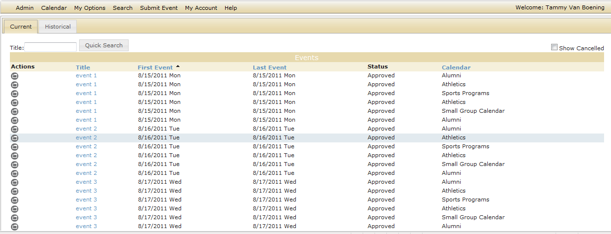

View Request page

| If | Status |
| The request was approved for all calendars to which you submitted it | Approved |
| The request was denied for all calendars to which you submitted it | Disapproved |
| The request has not previously been approved for any calendar, or it was previously denied for any calendar, and it is currently pending on one or more calendars | Pending |